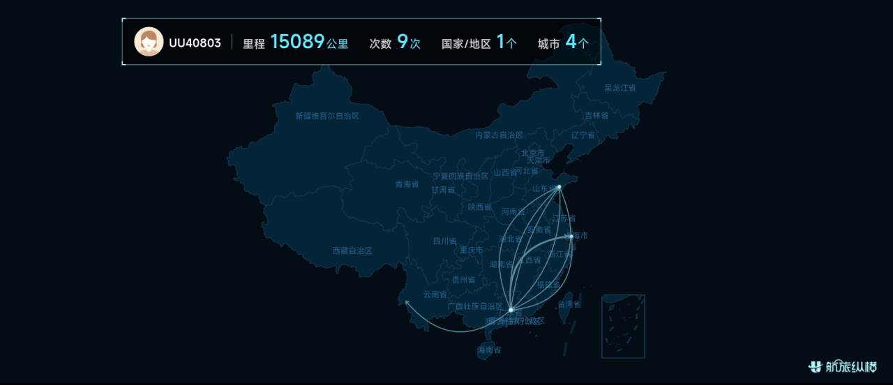
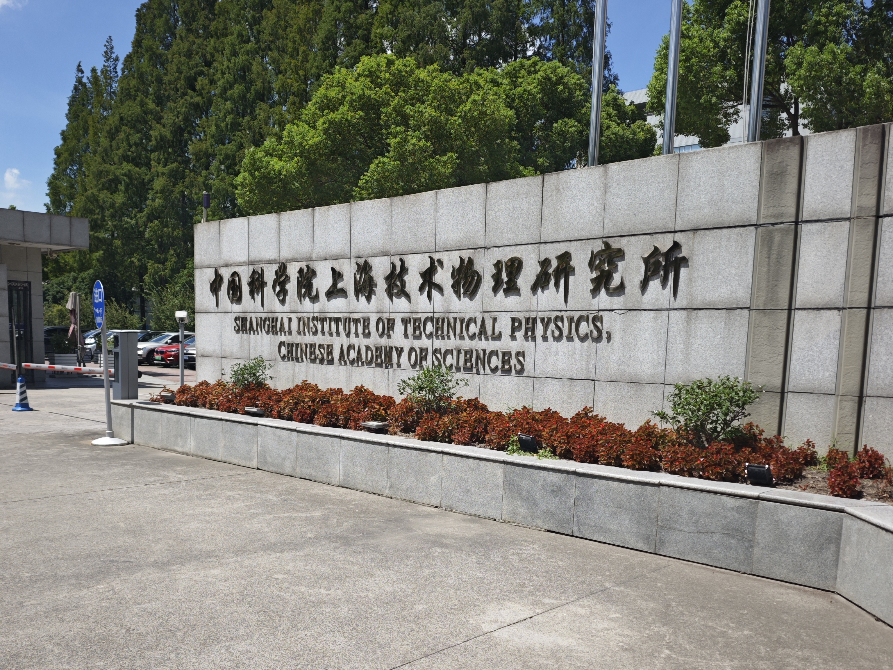
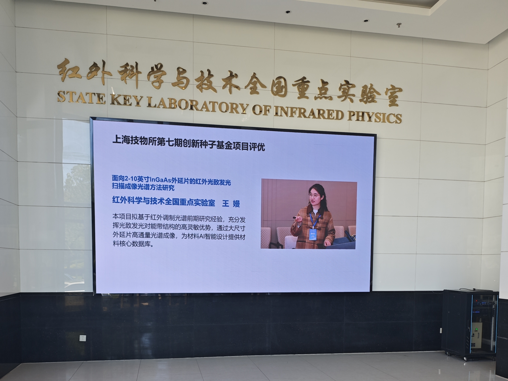
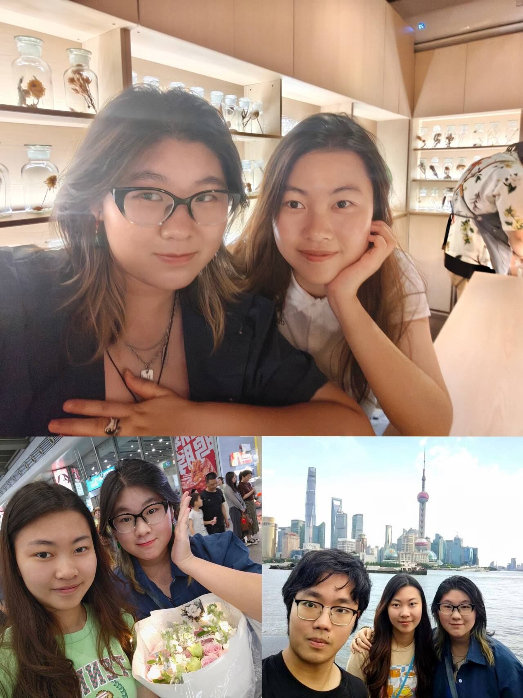
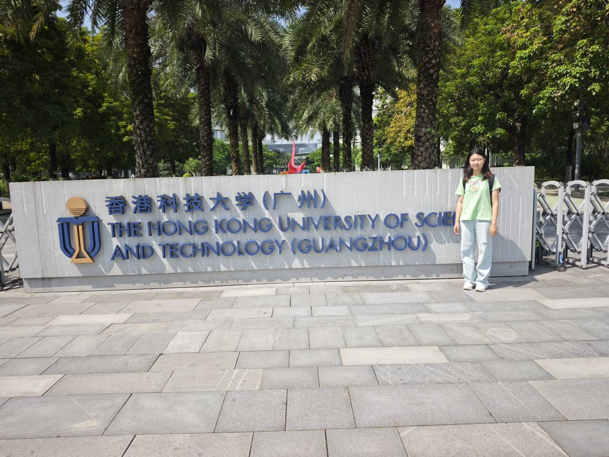
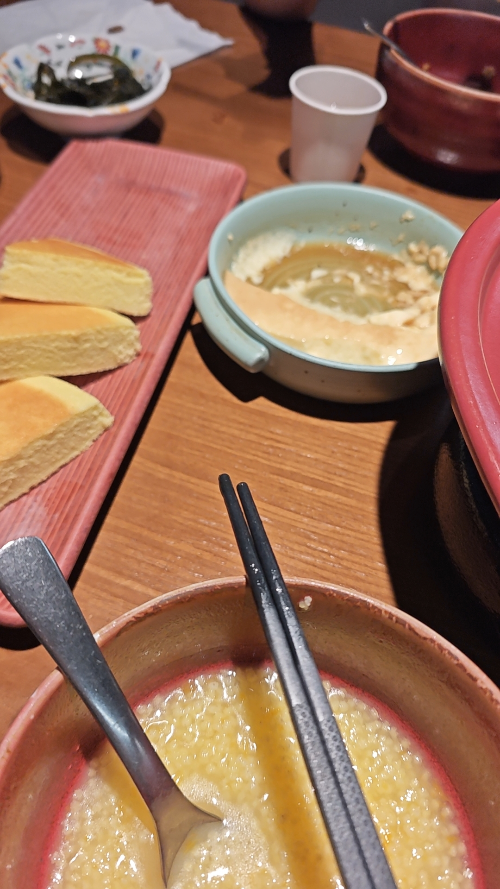
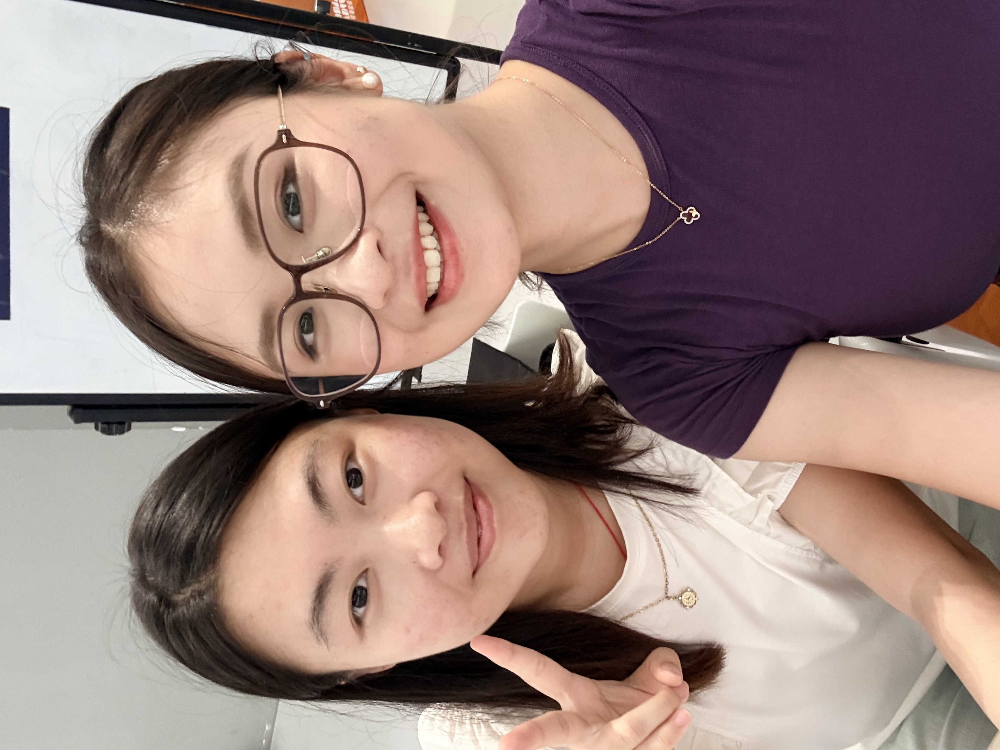
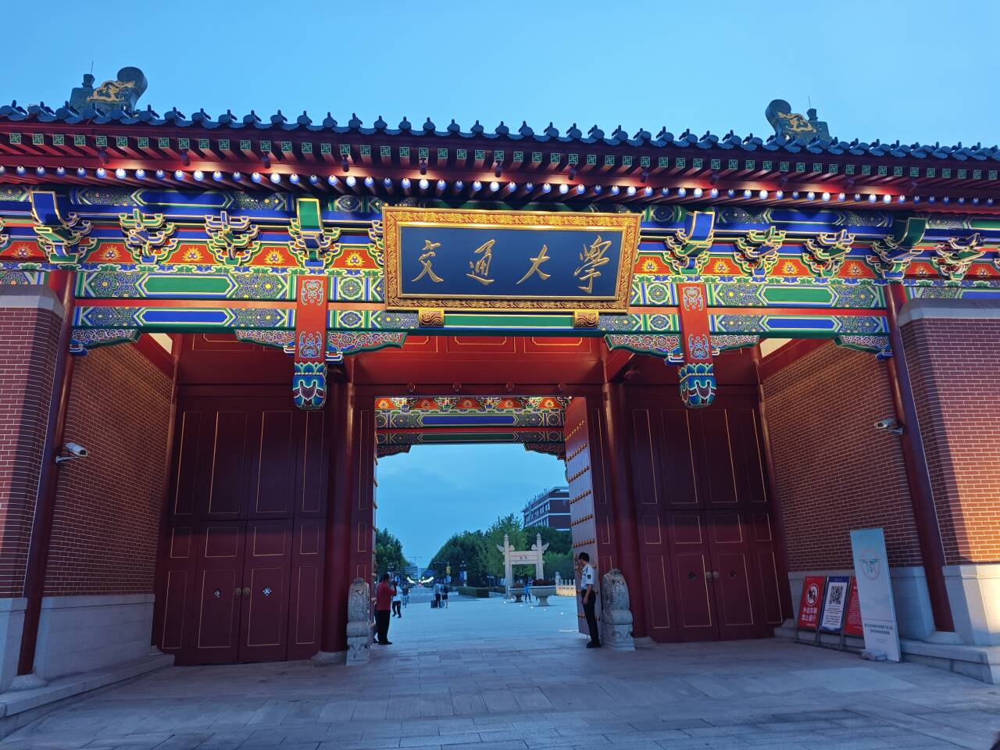
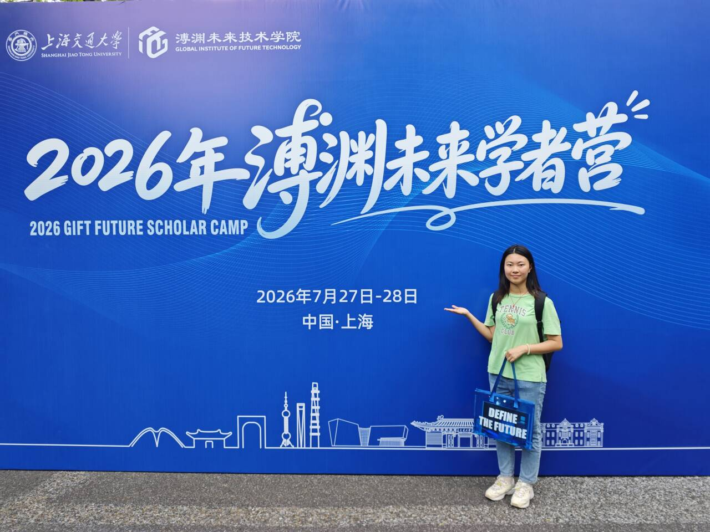

全国飞行记

相信命运的推背感。
从2026年7月到9月，累计飞行6次，累计乘坐高铁8次。抵达5个城市，9个目的地。
第一站：中国科学院上海技术物理研究所
2025.08 - 2026.07
这是我最早接触的一站，要从2025年8月参加暑期科研实习开始。当时从武汉比完赛，马上跑去上海，极限五分钟在武汉高铁站上车。那时爽玩了三个星期，把大大小小街道，和各种各样的美食都体验了一遍。



2026年1月底，刚考完期末考，去参加技物所冬令营。非常匆忙的赶完汇报，又去参观嘉定园区的实验室，还吃了大餐。
七月初通过一个线上面试，拿到offer，感谢技物所，让我心安。
第二站：中山大学（深圳）
2026.07.13 - 2026.07.14
第一个正式参加的夏令营，让我没考完期末考就离开学校了。虽然参加的很早，但是结果在填系统前几天才出，而且还超发了。
面试内容非常简单，英文问答（对深圳有什么印象）+中文，问这些项目是依托什么平台的，为什么大职只修了2和4，为什么没有心理健康课程的成绩等等。
.jpg)
.jpg)
.jpg)
.jpg)
.jpg)
.jpg)
.jpg)
.jpg)
.jpg)
.jpg)
非常感谢Bonnie请我吃了好多顿饭！还带我转了校园，太大了深圳校区，虽然很偏僻。
第三站：HKUST(GZ)
2026.07.23 - 2026.07.24
非常奇妙的面试体验。分为群面和个面。红鸟项目非常注重跨学科的创新能力和ai的融合。

早上群面，在一定时间内随机分配的一个小组的人，围绕一个主题词，搭建一个项目，展现形式可以是积木，绘画，思维导图等。可以在特定阶段使用ai，但实际我们觉得ai还没有我们想的快。
我们抽到的主题是低空经济，关键词是无人机物流路径规划师。我们设定的场景是在深圳外卖快递等无人机物流配送。然后提出相应的问题。制作分成六个模块，分别是用户层面、自提点仓库、基站、地图路线规划、AI辅助教育、还有最终的系统集成。我负责自提点和基站模块，主要要解决最后一公里的配送难题。
搭建完成之后，还要和其他小组互相挑战，质疑和借鉴。最终向评委老师展示我们的成果，全程都有得分点。因为我坐的距离老师太远，而且回答问题时被其他同学粗鲁的打断，没有抢到得分点。真的是非常看运气。
如果评委中有外籍老师，需要全称英文讨论，隔壁小组非常幸运抽中了，在整个过程中他们讨论都很安静。
下午个面，早上和下午间隔一个小时，只够吃饭的时间，非常累人。个面需要自我介绍的时候全英，回答评委问题的时候中文。如果有外籍评委则全程英文。
个人介绍主要围绕一个问题展开，其中穿插自己的项目经历等。不是普通的自我介绍。整个流程比较轻松，就是等待的时候，空调非常足，冻的人发抖。
整个得分我感觉主要看早上的群面，纯看运气，看能不能分配到好的队友，共同商讨而不是一人言。下午的个面每个人都差不多，拉开不了差距。
宿舍实在是太豪华了，单人单间，八个人一个厨房客厅，两个卫生间，四个洗漱台。我的舍友有的是西南大学的兽医学专业，有的是重庆大学的管理学，还有华南理工的微电子。专业真是五花八门。


幸运有朋友，感谢悦然请的北方家宴，还带我逛了学校，好久不见！感谢610请的粉，面试完终于可以休息了。
第四站：上海交通大学
2026.07.27 - 2026.07.28
第n次来上海，也是最压力的一个面试。


第一天是开营仪式，各个老师介绍自己的研究方向。第二天面试。
第二天的面试异常恐怖，完完全全拷打十分钟，只有简历面，没有ppt，有七八个老师，对着那张纸连续不间断的问几十个问题，快得没办法反应。其中有一个女老师非常mean，每次回答完一个问题之后都会翻白眼表示蔑视，还假装捂嘴笑来嘲笑。
校园超级无敌大，非常大。有很多有意思的地方，有小鹿，有类似园林的建筑，很有大学校园气息啊！
第五站：南方科技大学
2026.07.31
从上海赶回来，无缝衔接南科大，连校门都忘记拍了。
荻姐来接我进校门，带我寻找非常深入的学院楼，那天还下雨，非常麻烦。和院长一对一聊了接近两个小时，把我所有的信息都细致的扒了一遍（对后面准备其他面试很有帮助）。
结束后荻姐和fy请我吃了非常丰盛的学校餐馆，没想到学校里还有这种餐厅。实在太累了，吃完饭没有参观校园就回去了。
第六站：复旦大学
2026.09.02 - 2026.07.03
第n+1次来上海。因为是预推免，且已经到九月份，所有的面试节奏都快很多，这个只有半天的面试时间。
面试老师很温和，全程微笑，也没有刁难人。英文问答是给出几句英文文献，我很多专业名词都看不懂，磕磕巴巴的结束了。中文主要问和技物所的实习情况（这个院和技物所合作很多），还问复旦在心中排第几志愿等等。
整个学校只有黄色和绿色，大片的黄色建筑和大片的绿地绿树，有种古老板正朴实的感觉。
第七站：中山大学（东校）
2026.09.02
在日照实训时，请两天假匆匆赶回。坐了十个小时高铁回去，睡也睡不着，复习也看不下去，差点晕高铁。这次面试时间也是只有半天。我抽中第二天的下午。
当天早上还有南科大的线上面试，幸好错开了半天。感谢湾湾和火卓帮我预约中大图书馆的会议室，还一大早来学校接我进去，让我在里面面试南科大电子系。
面试等待非常煎熬，因为不知道自己是多少号，不知道要等待多长时间，只有坐在等候室等待叫号，体验感很差。面试英文部分是抽一段英文文献，一个一个词翻译出来，没翻译出来的老师还会倒回去，重新问一遍是什么意思，引导你直至说出这个词的意思，但是老师都很nice，面带微笑。中文问答中规中矩。
终于印证了群名，求一个东校见，终于在东校相聚！以后可以每天一起约饭一起上课了。必须单独放的两张图片:
在这期间还把从微信头像换成发光的offer大楼（自从微信注册，我的头像就没有换过）。这段时间也是最难熬的时间，已经接近尾声了，但是没有满意的去向，甚至想过弃保出国。每天状态更新这个offer大楼，心诚则灵！
第八站：同济大学
2026.09.17 - 2026.09.18
第n+2次来上海。目前为止已经把上海三个学校都去遍了。
同济非常的良心，筛选入营的人数不多，来现场参加的人更是少，可能只有150人不到。
虽然已经到了填系统的前两三天了，但是需要笔试和面试。第一天笔试，包括最优化方法与机器学习综合+英语。这两个专业课我都没接触过，极限一天半速成，在飞机地铁上狂看狂背。还花80元大价格购入往年习题，虽然没用。
第二天面试老师也很nice，包括政治素养问答，英文问答，和中文问答。中文问题都很开放，比如介绍你最熟悉的一个项目等。
这是我最喜欢的校园环境之一。有人气也有活力，里面的配套设施非常完备，各种美食店铺和奶茶店，非常多，一墙之隔也有商业街。只是地方偏远。
还在上海遇见湾湾，真是他乡遇故知。
最后感谢家里的支持，包括物质和精神！
—— 小牛，写于2026年11月